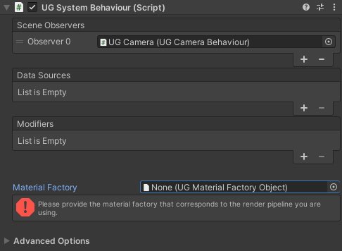
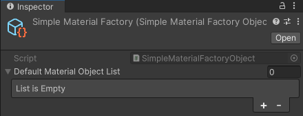
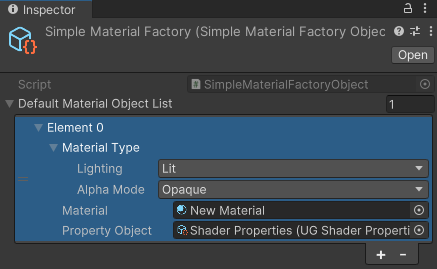
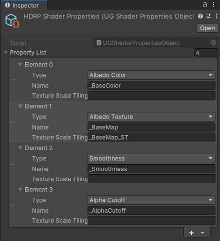

Material Factory
The material factory allows the UG System to take function with any render pipeline, provided that the appropriate material factory has been created and has been assigned.
The Unity Geospatial Framework comes with material factories for both the Built-in render pipeline, the High Definition Render Pipeline as well as the Universal Render Pipeline.

Create A Material Factory
New Material Factory
First, in your Asset directory, create a new Material Factory Object by right clicking in a and selecting Create > Geospatial > Rendering > Simple Material Factory.

Now add a new element by clicking the + sign.
We must create an element for each Material combination that we will use.
- The Lighting value defines if the selected material receives light contribution.
- The Alpha Mode defines how the selected material manage shaders with transparency values.
- The Material is the base material that will be applied to instances that requires the selected lighting and alpha mode.
- The Property Object is the selected material mapping for each property type (albedo, texture, smoothness, alpha).
For our example, create a new Material based on HDRP/Lit. Set the lighting to Lit, the alpha to Opaque and the material to our newly created HDRP Material. Leave the Property Object as is for the moment.

New Shader Properties
In your Asset directory, create a new Shader Properties Object by right clicking in a directory and selecting Create > Geospatial > Rendering > Shader Properties.
This new properties list allow to map property types to material properties. For example, if we specify the property type to be Albedo Color and we set the name to _BaseColor, each time a dataset needs to set the color to the material albedo channel, it will set its value to the _BaseColor property of the assigned material.
We then return to our created Material Factory Object and we set the property object to our newly created Shader Properties Object. We now have a functional Material Factory that we can assign to a System. Still, if we would want to support transparency, unlit materials, textures and smoothness, we would need to create new material factory elements and the corresponding shader properties.

Use the Deferred Material Factory
Using the Simple Material Factory allows to customize
how to instantiate the materials independently to the instance. But if you want to create a shader based
on the instance attributes (color by height or an other metadata field for example), you would need
to use the Deferred Material Factory instead and implement your own material instantiation via
a custom UGSystem.